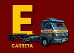

🚛
Informação
Organizar informações de forma simples para ajudar quem está planejando sua evolução profissional.
Informação • Formação • Valorização
Um projeto para olhar além da habilitação e mostrar a realidade, os desafios e as oportunidades de quem busca crescer no transporte — com a Categoria C no centro dessa conversa.
O projeto
Mais do que decorar regras, é importante entender o caminho profissional, as exigências, as dificuldades e as expectativas de quem pretende evoluir na habilitação.
Organizar informações de forma simples para ajudar quem está planejando sua evolução profissional.
Separar expectativas de fatos e estimular uma visão mais consciente sobre o mercado de transporte.
Dar espaço para experiências, dificuldades e opiniões de motoristas e profissionais do setor.
Destaque do projeto
A evolução para veículos de carga representa uma mudança importante para quem deseja atuar ou crescer profissionalmente no transporte. O objetivo aqui é explicar o caminho sem criar falsas promessas.
A CNH Categoria C permite conduzir veículos motorizados de transporte de carga com Peso Bruto Total (PBT) superior a 3.500 kg, além de todos os veículos permitidos na categoria B.
Para mudar a CNH da categoria B para a C, você precisa ter pelo menos um ano de habilitação na categoria B (incluindo o período da Permissão para Dirigir) e não ter cometido mais de uma infração de natureza gravíssima nos últimos 12 meses.
Categoria E: Estar habilitado no mínimo há 1 ano na categoria C ou D, ter 21 anos e não ter cometido mais de uma infração de natureza gravíssima nos últimos 12 meses.
Entenda a evolução
A sequência abaixo ajuda a visualizar os diferentes tipos de habilitação. Os requisitos e regras devem ser conferidos nas normas vigentes e no órgão de trânsito.
Veículos leves, dentro das características previstas para a categoria.
O foco principal deste projeto: veículos de carga e a realidade profissional de quem busca essa evolução.
Categoria destinada à condução de veículos para transporte de passageiros, conforme as regras vigentes.

Combinações de veículos e veículos articulados, conforme os requisitos legais aplicáveis.
Mito × realidade
O projeto nasceu para questionar ideias que circulam entre candidatos e profissionais e incentivar a busca por informação confiável.
“A categoria mínima de habilitação exigida pelo Código de Trânsito Brasileiro (CTB) para conduzir caminhões com peso bruto total acima de 3.500 kg é a categoria C, e não a categoria D.”
As Reais Vantagens de Mercado da CNH C , Sem limite de peso para veículos rígidos: Você pode dirigir caminhões do tipo Toco, Truck e Bitruck de qualquer tamanho e peso bruto Total , pois a lei os classifica como veículos únicos (com placas dianteiras e traseiras iguais)muitas transportadoras mesmo pedem cnh D para caminhoneiros poís não é o que Lei de Trânsito Diz , Condução de Cavalos Mecânicos Isolados: Se o "cavalinho" do caminhão estiver sozinho (sem a carreta acoplada), você pode conduzi-lo legalmente usando a categoria C.Equipamentos e Máquinas de Grande Porte: Perfuratrizes, guinchos de grande porte, guindastes instalados sobre chassis e caminhões-plataforma pesados entram perfeitamente na sua habilitação C .Flexibilidade com Reboques Leves: Você pode puxar reboques, semirreboques ou trailers acoplados ao seu veículo de carga, desde que o peso bruto dessa unidade acoplada não ultrapasse os 6.000 kg. Apenas acima disso (como no caso das carretas e bitrens) passa a ser exigida a categoria E .Isso torna o motorista com habilitação C um profissional extremamente versátil dentro de canteiros de Obras, Mineradoras e Empresas de Infraestrutura Urbana.
“Só a prova importa.”
Preparação, conhecimento das regras, prática responsável e formação contínua fazem parte da trajetória profissional.
Material do projeto
O eBook é a base de reflexão do projeto. Ele reúne a ideia central e os questionamentos que deram origem ao site.
Conteúdo em vídeo
Você pode substituir os cartões abaixo pelos links dos vídeos do seu canal ou de fontes oficiais.
Queremos transformar experiências reais em informação. Responda à pesquisa e conte o que você viveu na sua trajetória profissional.
Use este espaço para registrar uma dificuldade, uma conquista ou uma sugestão para quem está começando.
Perguntas frequentes
Não. O site é um projeto informativo. Para requisitos, documentos, taxas, exames e procedimentos, consulte sempre o órgão de trânsito competente e as normas vigentes.
Não há garantia automática. A habilitação pode ser uma parte importante da qualificação, mas cada vaga possui seus próprios requisitos.
Sim. A proposta é ouvir experiências reais e ampliar o conteúdo com pesquisas, relatos e materiais educativos.
Mito da Categoria D
Compartilhe o projeto, leia o eBook e ajude a levar informação para quem está buscando uma nova oportunidade profissional.